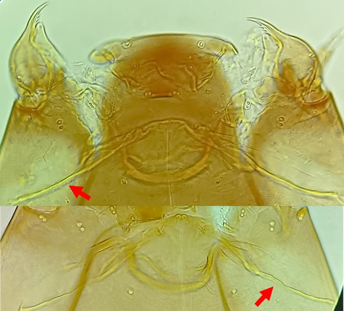
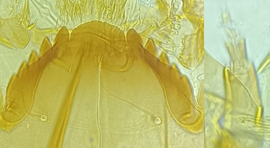
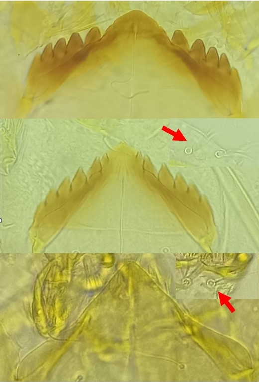

Sous famille des Orthocladiinae
Mentum sans barbe, une dent centrale (peut être crantée sur le coté)



Plaques ventromentales très longues, dépassent largement du mentum
(d’environ la moitié de la longueur du mentum)
SI plumeuses ou pectinées. Dent centrale plate et large.
Soies anales courtes. Prémandibule simple. 5 dents latérales
SI multibranchées (2 ou plus).
Dent centrale peut être crantée sur le côté (présence possible d’un « mamelon »). Antenne avec 6 segments (si visible ; le 6ème est vestigial). Longues soies anales